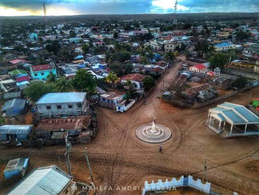
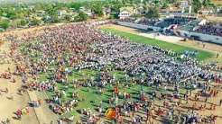
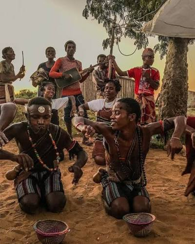
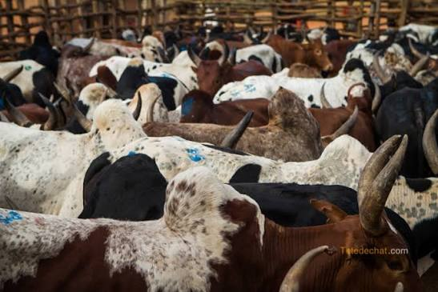
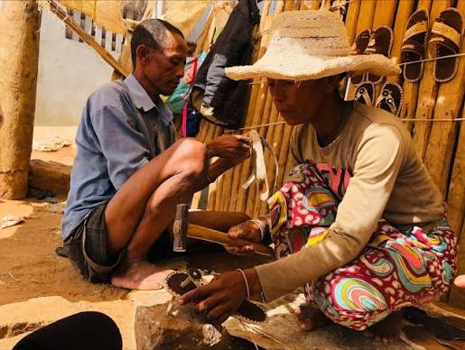
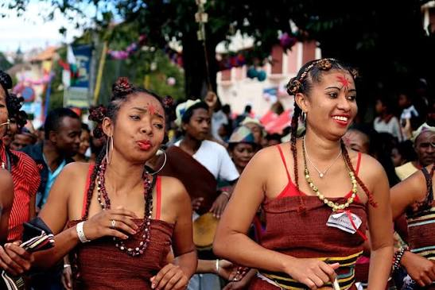
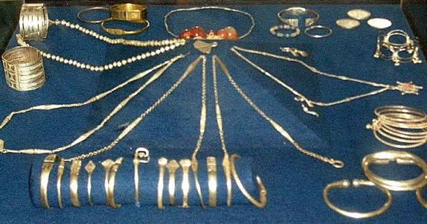
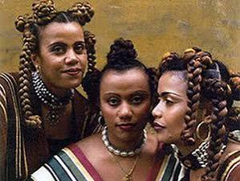

Histoire et culture des Androy
Découvrez l'identité profonde et l'héritage unique du peuple Antandroy

Histoire de la région
Antandroy est un nom qui signifie littéralement « ceux qui vivent sans les épines ».
La fondation moderne d'Ambovombe, 1900
Le nom Ambovombe signifie « là où les grands puits abondent » : cette ville s'est
développée autour de précieux points d'eau, indispensables à la survie des troupeaux
dans cette zone sèche. Vers 1900, la ville est fondée par l'administration coloniale
française, sous la conduite du capitaine Combes. La région a opposé une très forte
résistance à la colonisation, le peuple Antandroy étant réputé pour sa fierté et son
esprit guerrier indomptable.
Population
Une population jeune et rurale

Le district d'Ambovombe compte plus de 380 000 habitants, caractérisé par une
population très jeune, majoritairement rurale, mais en forte croissance urbaine
dans le centre d'Ambovombe.
Tradition et coutumes
Le système du Hazomanga
.jpg)
La société Antandroy est étroitement structurée autour des clans familiaux. Le lien
spirituel entre les vivants et les ancêtres est matérialisé par le Hazomanga. C'est
le patriarche du clan (le mpisoro) qui dirige les grandes cérémonies rituelles comme
les bénédictions (soro) ou le rituel de la circoncision (savatse).
Événements culturels
Festival Savatse
.jpg)
C'est une grande cérémonie traditionnelle de circoncision collective qui marque le
passage des garçons à l'âge adulte.
Festival Rebeke et Androy Music Festival

Célébrations de la musique et des arts traditionnels du sud.
.jpg)
Festival Caméléon et Mandrare
Rencontres artistiques avec les ethnies voisines.
Le marché aux zébus du lundi

Rassemblement hebdomadaire au cœur de l'identité et de l'économie Antandroy.
Artisanat local

Les sandales en cuir de zébu
Réputées pour leur solidité face au sol aride.
Le tissage traditionnel

Pièces uniques en soie sauvage, mêlées de fils de plomb.
Les bijoux en argent

Bracelets traditionnels lourds, symboles de richesse.
La vannerie

Chapeaux et nattes tressés en fibres végétales locales.
.jpg)
.jpg)
.jpg)
.jpg)
.jpg)